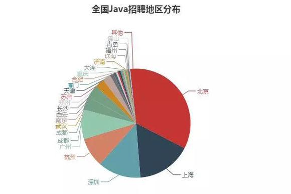
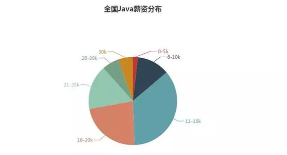
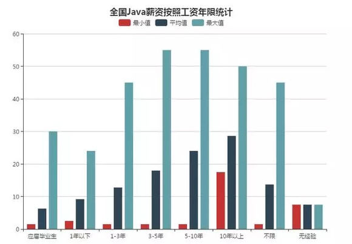

什么是Java？
我从Java的官网上抄下来下面这段话：
97% 的企业桌面运行 Java
美国有 89% 的桌面（或计算机）运行 Java
全球有 900 万 Java 开发人员
开发人员的头号选择
排名第一的部署平台
有 30 亿部移动电话运行 Java
100% 的蓝光盘播放器附带了 Java
有 50 亿张 Java 卡在使用
1.25 亿台 TV 设备运行 Java
前 5 个原始设备制造商均提供了 Java ME
Java 是几乎所有类型的网络应用程序的基础，也是开发和提供嵌入式和移动应用程序、游戏、基于 Web 的内容和企业软件的全球标准
经过了多年的发展，Java早已由一门单纯的计算机编程语言，演变为了一套强大的技术体系。是的，什么是Java，我想技术体系四个字应该是最好的概括了吧。
需要学什么？
一，Java基础语法（重点掌握）
1、关键字
2、标识符
3、注释 【重点关注】
4、常量与变量
5、运算符
6、语句
7、函数（方法）
8、数组
二，核心知识
1、面向对象的思想
2、面向对象的四大特征
--抽象
--封装
--继承
--多态
3、了解一个类
--类的构成
-属性
-方法
-构造方法
-块
-内部类
--高级特性
-final
-static
-abstract
-sychronsized
--常用特性
-包
-修饰符
4、类与类之间的关系
没关系
依赖（use a）
关联（has a）
继承（is a）
5、接口（抽象类--抽象方法）
6、类，抽象类，接口之间的关系
4、类与类之间的关系
没关系
依赖（use a）
关联（has a）
继承（is a）
5、接口（抽象类--抽象方法）
6、类，抽象类，接口之间的关系
四常用的API
1、math,date,random，String，StringBuffered，StringBuilder,BigInteger...
2、集合框架
--collection
-list
-set
-map
-hasmap
-treemap
-collections
-arrays
3、I/O
4、swing 【内部类 匿名类】
5、多线程
6、网络
--TCP和UDP两种网络数据传输方式
7、反射
8、模式
--单利模式
--工厂模式
--装饰模式
--适配模式
9、注解
10、补充知识点：Javase的新特性
学了Java干什么？
1、Java 可以用来做网站
Java可以用来编写网站，现在很多大型网站都用JSP写的，JSP全名Java Server Pages。
它是一种动态网页技术，比如我们熟悉的163，一些政府网站都是采用JSP编写的。
所以学习Java的同学可以找开发网站方面的工作，而且现在找这方面的岗位比较多。
比如：网站开发，当然就是JSP+Servlet+JavaBean，一直以来都相当流行。
3、Android可以做游戏
或者你不知道，在以前诺基亚还很流行的时候，你玩的手机游戏有90%以上都是Java开发的。
当然现在已经很少人再去开发了，都转到安卓上去了。
电脑上也有java开发的游戏，最经典的是：《我的世界》(minecraft ，简称MC)，当今世界最具人气和影响力的网络游戏之一《英雄联盟》（简称lol）。
4、Java可以做软件
一般编程语言都可以做软件的，Java 也不例外，例如Eclipse，MyEclipse等知名Java开发工具.有关开发软件组件，可以了解Java Swing编程 或者 awt 相关知识。
比如：企业级应用开发，这里是JAVA的天地，大到全国联网的系统，小到中小企业的应用解决方案，Java都占有极为重要的地位。
另外还有移动领域，典型的应用是手机游戏（国内主要是这方面），这里是J2ME的天地，其实应用范围是很广的。
就业前景（重点来了）
上一段已经介绍了学习Java能做哪些工作了，这里不多赘述。主要说一下Java在全国范围内的待遇及就业情况：

可以看到互联网企业集中的北京、上海、深圳的Java工程师需求量最大，杭州、广州紧随其后。
全国Java工程师薪资范围分布图：

全国超过50%的Java工程师，月薪在16k以上，11-15k的工程师占比35.6%。
Java工程师薪资与工作年限的关系分布(薪资单位为K)：

随着工作经验的增加，Java工程师的平均薪资也在增加，可见工作经验很重要。当然优秀的工程师，1-3年的工作经验，也可以拿到比较好的薪酬。
如果你在学习中对于java学习路线，学习方法和学习效率有遇见不懂迷茫的地方，可以申请加入我创造的java学习圈，【六三零四五#五五九四】，圈内有最新整理的java基础精讲视频、开发工具、还有很多干货和技术资料分享！欢迎一起交流！